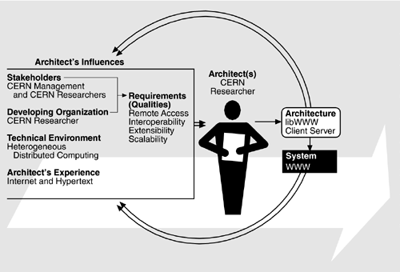

| [ Team LiB ] |
|
13.1 Relationship to the Architecture Business CycleThe original proposal for the Web came from Tim Berners-Lee, a researcher with the European Laboratory for Particle Physics (CERN), who observed that the several thousand researchers at CERN formed an evolving human "web." People came and went, developed new research associations, lost old ones, shared papers, chatted in the hallways, and so on, and Berners-Lee wanted to support this informal web with a similar web of electronic information. In 1989, he created and circulated throughout CERN a document entitled Information Management: A Proposal. By October of 1990 a reformulated version of the project proposal was approved by management, the name World Wide Web was chosen, and development began. Figure 13.1 shows the elements of the ABC as they applied to the initial proposal approved by CERN management. The system was intended to promote interaction among CERN researchers (the end users) within the constraints of a heterogeneous computing environment. The customer was CERN management, and the developing organization was a lone CERN researcher. The business case made by Berners-Lee was that the proposed system would increase communication among CERN staff. This was a very limited proposal with very limited (and speculative) objectives. There was no way of knowing whether such a system would, in fact, increase communication. On the other hand, the investment required by CERN to generate and test the system was also very limited: one researcher's time for a few months. Figure 13.1. The original ABC for the Web The technical environment was familiar to those in the research community, for which the Internet had been a mainstay since its introduction in the early 1970s. The net had weak notions of central control (volunteer committees whose responsibilities were to set protocols for communication among different nodes on the Internet and to charter new newsgroups) and an unregulated, "wild-west" style of interaction, primarily through specialized newsgroups. Hypertext systems had had an even longer history, beginning with the vision of Vannevar Bush in the 1940s. Bush's vision had been explored throughout the 1960s and 1970s and into the 1980s, with hypertext conferences held regularly to bring researchers together. However, Bush's vision had not been achieved on a large scale by the 1980s: The uses of hypertext were primarily limited to small-scale documentation systems. That was to change. CERN management approved Berners-Lee's proposal in October 1990. By November he had developed the first Web program on the NeXT platform, which meant he clearly had begun working on the implementation before receiving formal management approval. This loose coupling between management approval and researcher activity is quite common in research organizations in which small initial investments are required. By their nature, research organizations tend to generate projects from the bottom up more often than commercial organizations do, because they are dependent on the researchers' originality and creativity and allow far more freedom than is typical in a commercial organization. The initial implementation of a Web system had many features that are still missing from more recent Web browsers. For example, it allowed users to create links from within the browser, and it allowed authors and readers to annotate information. Berners-Lee initially thought that no user would want to write HyperText Markup Language (HTML) or deal with uniform resource locators (URLs). He was wrong. Users have been willing to put up with these inconveniences to have the power of publishing on the Web. |
| [ Team LiB ] |
|